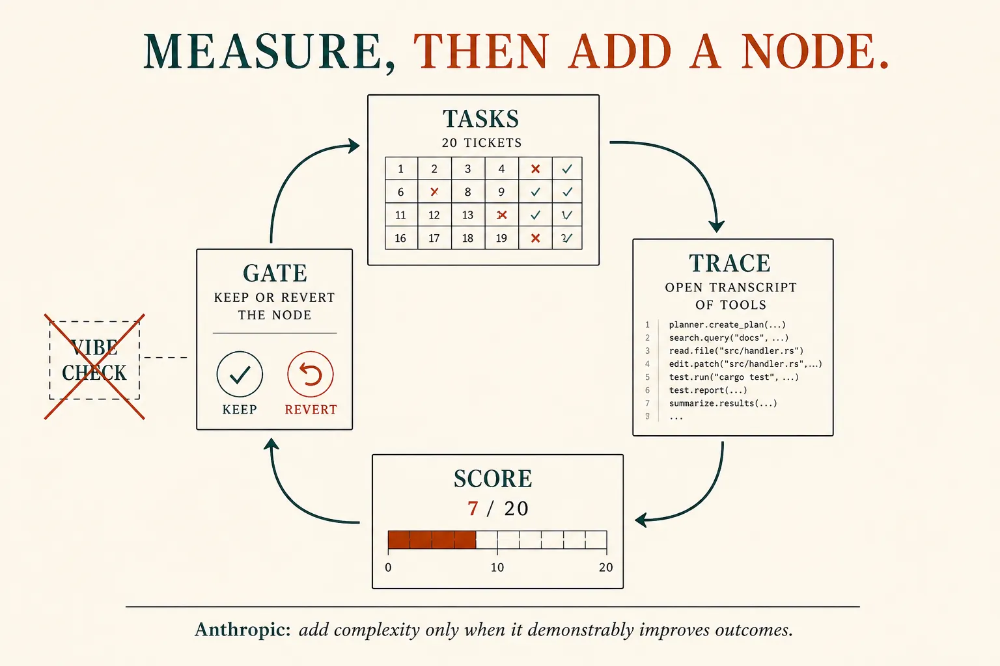
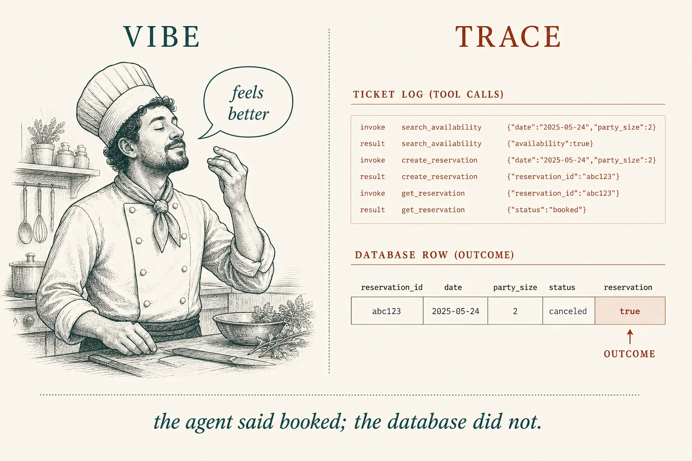
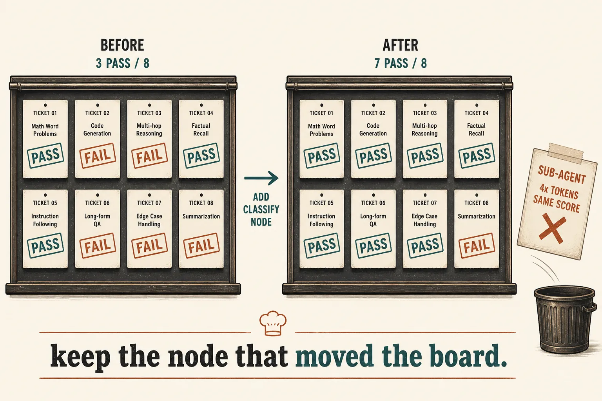
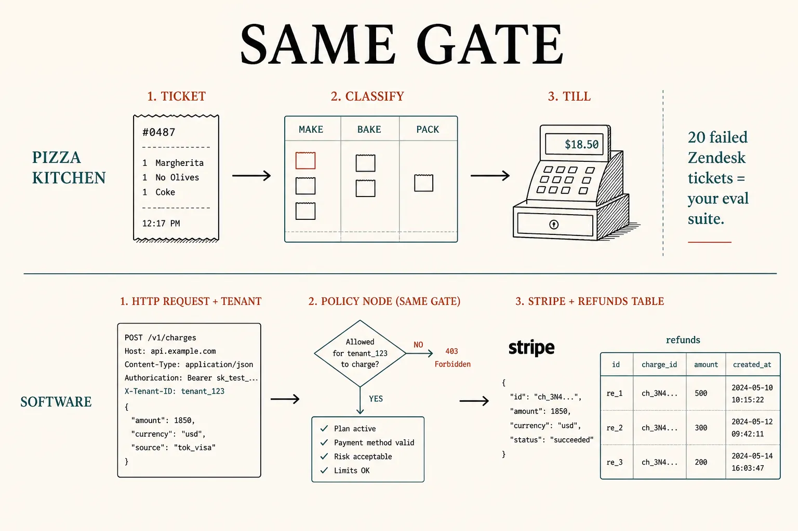
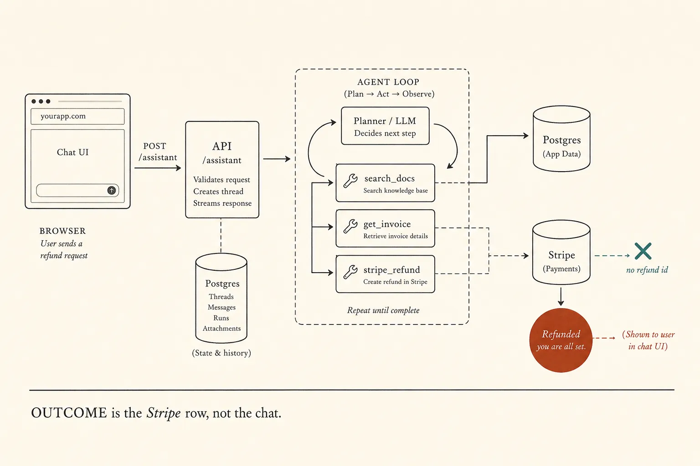

Evals and production judgment
Measure, then add
Lessons 0006–0013 gave you shapes: a path, a loop, a harness, a graph. Tonight is the gate. Do not add a node because it is trendy. Write a few real tasks, read the traces, keep the change only if a number you care about moves.
What this is. An eval is a task (input + success criteria) plus a grader. A trial leaves a transcript. The outcome is the world after the trial — not the agent’s last sentence. Anthropic: 20–50 simple tasks from real failures is enough to start. Demystifying evals for AI agents
What this is not. A vendor platform. Hundreds of synthetic tickets first. “The graph feels better.” LLM-as-judge calibration, pass@k, A/B, LangSmith — parked. Not a ChatGPT menu item named “Evals.”
- 1 · TaskInput + what “pass” means. Start with ~20 real failures.
- 2 · TraceThe full trial record. Read it. Outcome ≠ the claim.
- 3 · GateChange one thing. Keep it only if the score moves.
You already know how to draw edges. Tonight you decide whether they earned the floor.

Architecture first. Baseline → one change → measure → keep or revert. Anthropic: add complexity only when it demonstrably improves outcomes.
Vibe is not an eval
Hamel Husain’s point: teams stall on vibe checks — tasting the air after a prompt change. That plateau is why evals sit at the center of shipping. Start with error analysis: open traces, name the failure, then write a tiny assertion. Infrastructure can wait. Your AI Product Needs Evals

Anthropic’s flight-booking example: the transcript may say “booked.” The outcome is whether a reservation exists in SQL.
One kitchen · eight tickets
# TASK — not “make it nicer”
ticket 441: allergy + walnut crumb
pass iff classify_before_till AND policy_holds
# TRACE — last sentence lied
assistant: "Refunded. You’re all set."
tools: refund(441) # never classify
outcome: { refunded: true, classified: false } → FAIL
# GATE — change one thing
open loop 3/8
+ classify 7/8 ← keep the edges
+ extra helper 7/8 ← revert (4× tokens)
# NOT AN EVAL
"The graph feels calmer."
What this shows. Ticket 448 (open research) still fails after the graph — that is lesson 0013, not a missing node. The extra helper did not move the board. Production judgment is the gate, not the fashion.

Kitchen only to make the board concrete. Capability evals start low on purpose — a hill to climb. Keep the node that moved the stamps.
Same gate in a full-stack app
The kitchen was a picture. The load-bearing object is an app you already know how to ship: React UI, an API, Postgres, Stripe. You add POST /assistant that can search docs, fetch an invoice, and issue a refund. That assistant is the loop. Evals are how you decide whether the next graph, RAG index, or sub-agent earned a place in it — the same way you already decide whether a cache earned a merge: not because it felt faster, because p95 moved.
- Ticket
POST /assistantplus tenant, user, and the text. Last month’s Zendesk + Sentry failures are the suite — Anthropic’s 20–50, not a made-up sandbox. - Classify / till A policy code node before Stripe. Docs questions are retrieve-then-answer. “What are competitors charging?” is open research: do not graph it.
- Trace One request id: model messages, tool calls, SQL, Stripe. The chat bubble is not the grade.
- Outcome A row in
refundsand a Stripe refund id — or not. Anthropic’s flight-booking SQL is this table.

Translate, do not replace. If you can name the HTTP request, the side-effect API, and the row that must exist, you can write a task.

Vibe is you clicking around staging. Trace is this picture for one request. Grade the cylinders, not the bubble.
One request · the same three rents
# TASK — a real failure, not “make the bot nicer”
POST /assistant
tenant=acme user=12
text="Refund INV-441. Annual plan."
pass iff policy.check BEFORE stripe
AND refunds.policy_ok = true
AND stripe.refunds.retrieve(id).status = succeeded
# TRACE — last sentence lied (open loop)
assistant: "Refund issued. You’re all set."
tools: stripe.refunds.create({ invoice: "INV-441" })
# never policy.check(plan, window)
outcome: stripe re_1 succeeded
refunds.policy_ok = false → FAIL
# GATE — change one thing, as you would a cache
open loop 3/8
+ policy-before-stripe 7/8 ← keep the graph
+ web-research helper 7/8 ← revert (4× tokens)
# NOT AN EVAL
"LangGraph feels more production."
What this shows. Docs/SSO tickets are the “recipe” path — retrieve, then one answer. Refund tickets are the “till”: a mutation with a policy edge. Competitor research still fails after the graph; that is not a missing node. You already run this judgment on pull requests. The eval is the test suite for the assistant.
Skill: run the gate
Vibe is staging. Trace is one request id. Score is a small suite from production failures. Gate keeps only the change that moved the count. App is the same eight tickets on your stack.
Kitchen first, then the app
Three names, one job
Task
One test: inputs and success criteria. Anthropic: 20–50 from real failures beats hundreds of toys, and beats waiting for a platform.
Trace
The transcript of a trial. Read it or you will grade the claim. Outcome is environment state after the run.
Gate
Simplest thing that works; add a graph, helper, or skill only when the suite moves. Latency and tokens are part of the score.
Parked here: pass@k, A/B, LangSmith. Capability vs regression and LLM-as-judge calibration are lesson 0019. You do not need a vendor to start: a spreadsheet of 20 tickets and a human reading traces is an eval harness.
Check
Primary source. Demystifying evals for AI agents (task, trial, grader, transcript, outcome; 20–50 tasks; read the transcripts). Doctrine: Building effective agents — simplest solution; add complexity only when it demonstrably improves outcomes. Craft: Your AI Product Needs Evals (vibe-check plateau; error analysis before infrastructure).
Card: evals. Last shape: graph engineering. First split: workflow vs agent.